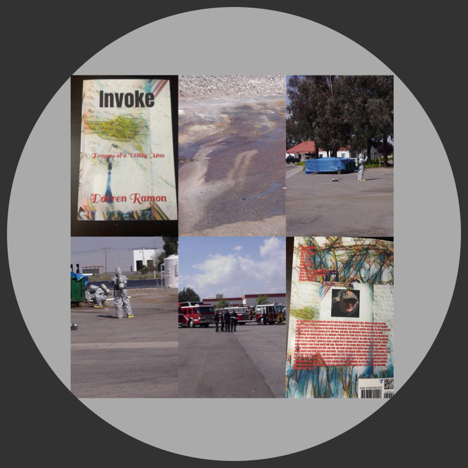

Invoke!
Prayer's of a UtilityMan!
One day your on the top of the World, and it feels great.
Yet, in reality, in a second, you discover that life is fragile and when death is at your door, what are you to do? Hope that the doctors save you or is there someone else?
In that second, my faith was starting to crack when nothing is certain but uncertainty, I realized that my love for God was profound and I prayed with tears that he would
allow me to see my wife and children again even for a second. So, I Invoked him with my many prayers because I knew he loved me as he always had.
Sold on Amazon by Author Darren Ramon
Love the reason for this story! This is the place for your free sample reading. Click the link.
Sample Reading